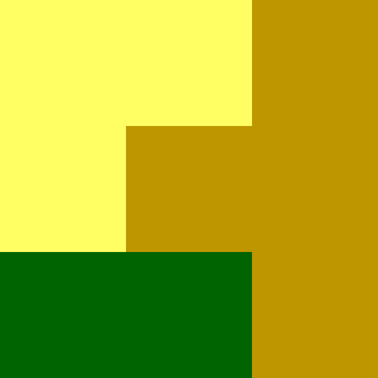
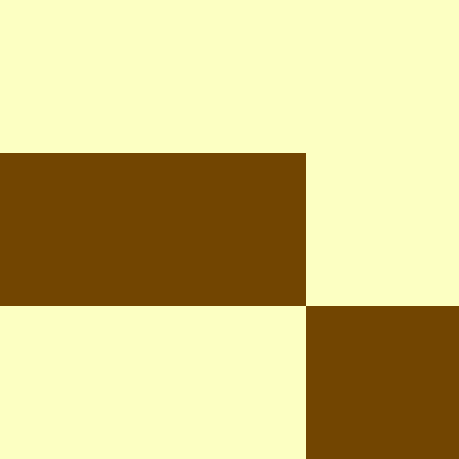

vignettes/incoma.Rmd
incoma.RmdThis vignette explains what an integrated co-occurrence matrix (incoma) representation is and how to calculate it using the comat package. If you do not know what a co-occurrence matrix is, it could be worth to read the first package vignette first. This representation is inspired by the work of Vadivel et al. (2007) and explained in details in Nowosad and Stepinski (2021). The examples below assume the comat package is attached, and the raster_x and raster_y datasets are loaded:
The raster_x object is a matrix with three rows and columns with values of 1, 2, and 3.
raster_x #> [,1] [,2] [,3] #> [1,] 1 1 3 #> [2,] 1 3 3 #> [3,] 2 2 3
We can imagine that the yellow color represents agriculture, green is forest, and orange color represents grassland.

The raster_y object is also a matrix of the same dimensions. It has values 5 and 6.
raster_y #> [,1] [,2] [,3] #> [1,] 5 5 5 #> [2,] 6 6 5 #> [3,] 5 5 6
We can imagine that light yellow color represents flat plains and brown color represents mountains.

The integrated co-occurrence matrix (incoma) representation consists of co-occurrence matrices (coma) and co-located co-occurrence matrices (cocoma). In the co-occurrence matrix, we only use one matrix and count adjacent categories of each cell. The co-located co-occurrence matrix uses two matrices and counts neighbors in the second matrix for each cell in the first matrix.
We can use the get_incoma() function to calculate this integrated co-occurrence matrix (incoma) representation. It requires a list of two or more matrices of the same dimensions.
get_incoma(list(raster_x, raster_y)) #> 1 2 3 5 6 #> 1 4 1 3 5 3 #> 2 1 2 2 2 3 #> 3 3 2 6 8 3 #> 5 5 2 8 8 7 #> 6 3 3 3 7 2 #> attr(,"no_unique") #> [1] 3 2
The incoma representation, for two matrices, consists of four sectors:
For example, there are four times a cell of class 1 in the first matrix is adjacent to another cell of class 1 in the second matrix (agriculture next to agriculture). Also, five times agriculture is adjacent to flat plains, etc.
Similarly to the co-occurrence matrix (coma), it is possible to convert incoma to its 1D representation. This new form is called an integrated co-occurrence vector (incove), and can be created using the get_incove() function, which accepts an output of get_incoma():
my_incoma = get_incoma(list(raster_x, raster_y)) get_wecove(my_incoma, normalization = "pdf") #> [,1] [,2] [,3] [,4] [,5] [,6] [,7] #> [1,] 0.04166667 0.01041667 0.03125 0.05208333 0.03125 0.01041667 0.02083333 #> [,8] [,9] [,10] [,11] [,12] [,13] [,14] [,15] #> [1,] 0.02083333 0.02083333 0.03125 0.03125 0.02083333 0.0625 0.08333333 0.03125 #> [,16] [,17] [,18] [,19] [,20] [,21] [,22] #> [1,] 0.05208333 0.02083333 0.08333333 0.08333333 0.07291667 0.03125 0.03125 #> [,23] [,24] [,25] #> [1,] 0.03125 0.07291667 0.02083333